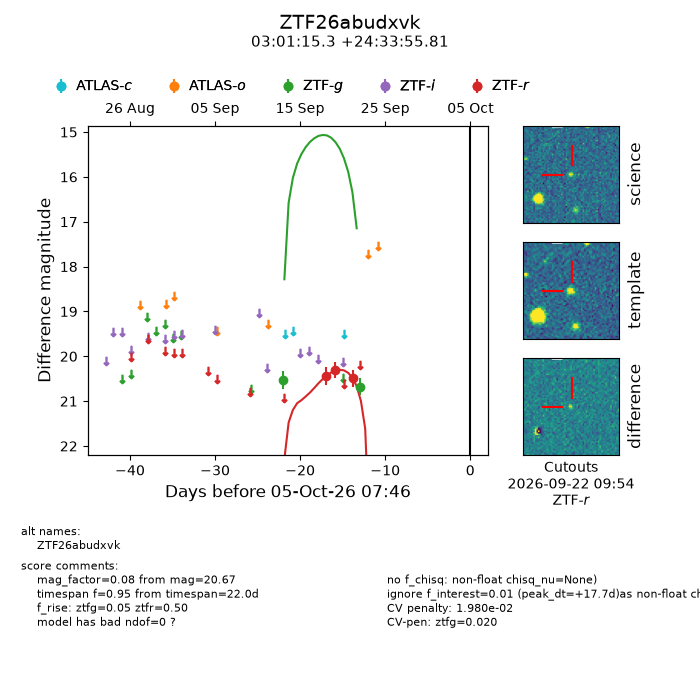
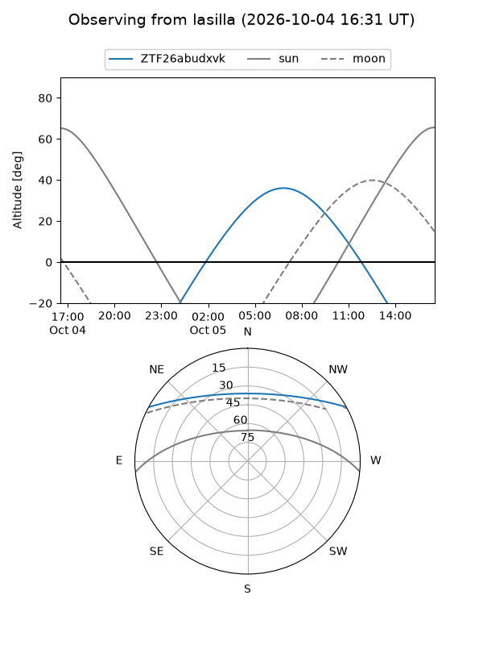
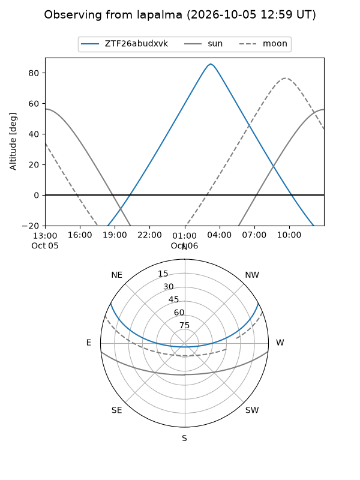
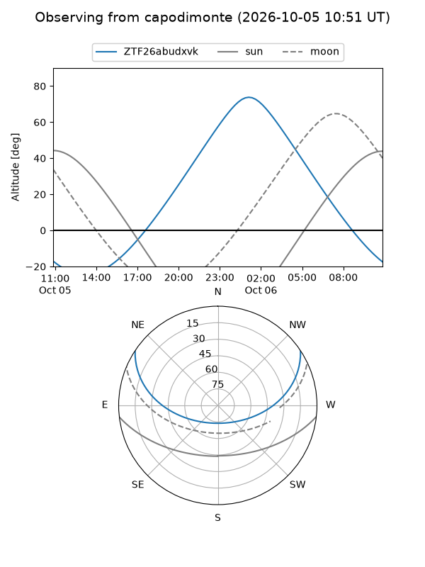
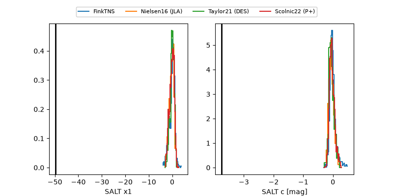

ZTF26abudxvk
Target ZTF26abudxvk at 2026-10-05 18:38
Aliases and brokers:
FINK-ZTF: ztf.fink-portal.org/ZTF26abudxvk
Lasair-ZTF: lasair-ztf.lsst.ac.uk/objects/ZTF26abudxvk
ALeRCE-ZTF: alerce.online/object/ZTF26abudxvk
Direct TNS query: direct search
alt names
ZTF26abudxvk (ztf,fink_ztf)
Coordinates:
equatorial (ra, dec) = 45.3136,+24.56550
equatorial (HMS+DMS) = 03:01:15.26,+24:33:55.81
galactic (l, b) = (157.0655,-29.56751)
Flags:
peak dt: +18.1
likely cv: !!
Photometry:
last ztfg=20.67, ztfr=20.49
2 ztfg, 3 ztfr detections
Lightcurve

Visibility



Additional plots
